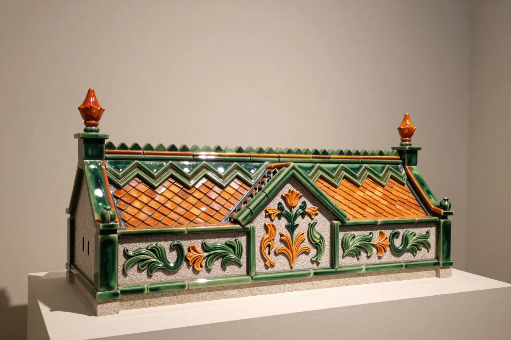

Fargerik arkitekturkeramikk fra den ungarske sesjonsstilen. Ödön Lechner og Zsolnay-fabrikken laget frostsikre pyrogranitt-fliser og iriserende eosin-glasurer til tak, kupler og fasader.

Kjerneidé
En nasjonal stil trenger et nasjonalt materiale: frostsikre, lyse leirfliser med ungarske folkeblomster og østlige mønstre gjør et tak til byggets ansikt.
Designprinsipper
Dekk taket med glaserte fliser i 3 eller 4 farger, lagt i sikksakk- og rutemønstre.
Form flisene av pyrogranitt, en leire brent ved svært høy varme som tåler frost.
Hent ornamentet fra ungarsk folkekunst: tulipaner, granatepler, påfugler og stiliserte blader.
Bruk den iriserende eosin-glasuren på spirene, mønepartiene og veggpanelene.
Ramm inn buene og portene med bånd av relieff og et keramisk mosaikk.
Brenn flisene i én varm brenning, slik at fargene ikke falmer.
Sett en lys mønekam, en spir og en tårntopp på takflaten.